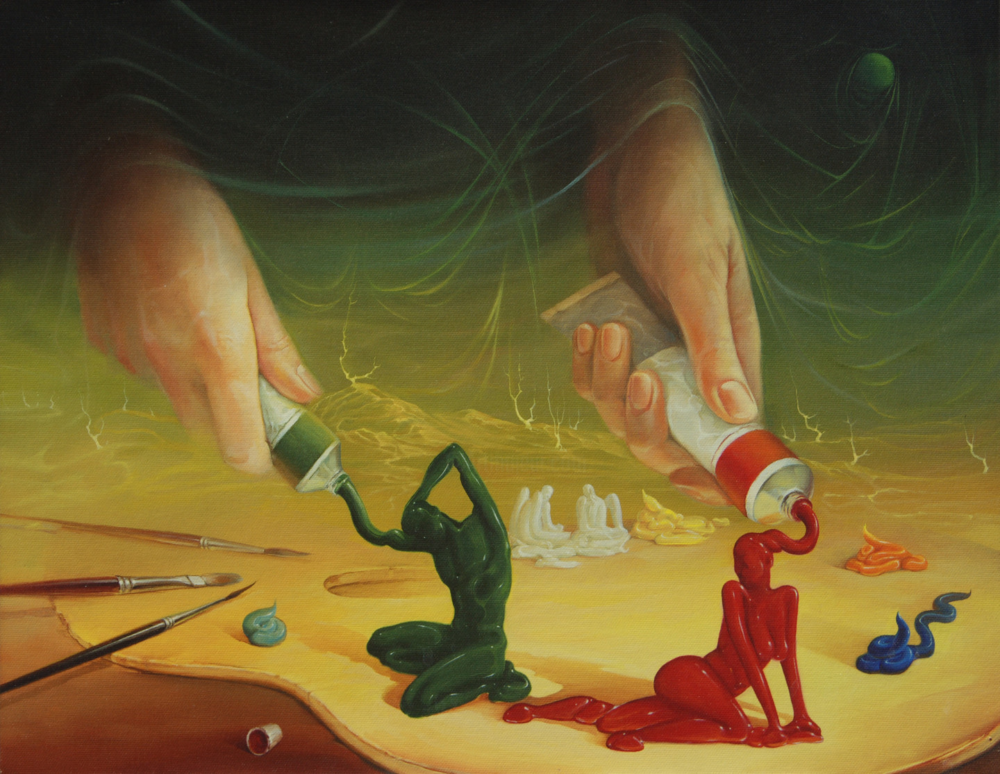
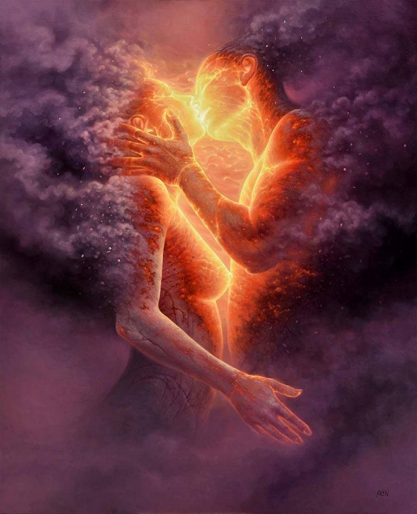
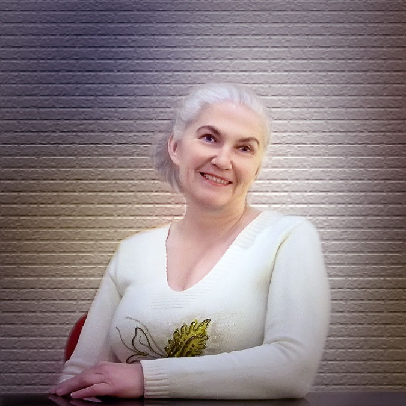

Сюрреализм Виктора Брегеда
«У тебя есть мозги в голове. У тебя есть ноги в обуви. Ты можешь направлять себя в любую сторону, которую выберешь. Ты самостоятельна. И ты знаешь то, что знаешь. И именно ТЫ будешь решать, куда идти». (Доктор Сьюз)
Любовь. Брак. Зависимость. Развод. Почему из огромного количества людей вокруг мы выбираем именно этого человека? И куда исчезают порхающие бабочки влюбленности, когда двое вдруг понимают, что совершенный выбор – ошибка? Или же ошибка – это развод, взаимные обвинения и отсутствие конструктивных действий, за которые отвечают оба супруга?
На самом деле все индивидуально…
Реальная история моей ученицы Марии.
Когда Мария Ш. встретила своего будущего мужа, все было замечательно. Они очень любили друг друга, поженились и стали родителями. И казалось бы – вот оно, счастье! Но судьба приготовила им испытания. Муж не имел постоянного дохода, его раздражали упреки Наташи, а потом он еще и начал злоупотреблять спиртным. Дети оказались невольными свидетелями родительских отношений, что не могло не отразиться на их физическом и психическом здоровье. Так, подросший сын стал копировать неадекватное поведение отца. А эмоциональная нестабильность дочки отозвалась соматикой бесконечных болезней.
Перед Марией встал выбор – оставить когда-то самого дорогого для нее человека или бороться за него. Она выбрала второе и победила. Мария вернула из алкогольного забвения мужа и отца своих детей.
Проще ли ей было эгоистично бросить его? Вероятно, да. Однако же выйти замуж за другого человека можно, а вот родной отец у детей всегда только один.
Но может быть, ей следовало терпеть испытания и ждать их окончания? Нет, конечно. Мария не захотела терять то, что осталось от их счастливого прошлого. Она предпочла работу над собой и гармонизацию своей реальности. Да, ты поняла правильно. Работу именно над собой.
Парадокс семейного конфликта в том, что все самые худшие черты партнера в большей или меньшей степени принадлежат и его половине. А когда нашлись решения, купирующие ее личные психологические проблемы, муж увидел перед собой ту, прежнюю Марию, которая, как оказалось, и сейчас волнует его не меньше, чем прежде. Пьянки остались в прошлом, а в настоящем появились и достойная работа, и любовь, и взаимопонимание.
Как это происходит
В чем же секрет свершившихся изменений? Как такие неравнозначные персоны, как Мария и ее муж, могут иметь одинаковые недостатки? Это не означает, конечно, что Мария любит выпить. Как пример, можно предположить, что Мария не удерживает контроль над ситуацией. Но ведь и алкогольная зависимость мужа также «радует» человечество отсутствием контроля в моменте. Итак, общая проблема их союза – отсутствие контроля над собственными чувствами и действиями.

Картины Томаш Ален Копера
Мы говорили выше, что Вселенная подсвечивает нам через других людей именно те проблемы, которые есть у нас самих. Стоило Марии увидеть в себе эти слабости и проработать их, как вся картина мира начала меняться. Урок был пройден и усвоен. И после «работы над ошибками» алкоголизм мужа просто исчез. Почему? Потому что в случае этой пары зависимость сыграла роль индикатора того, что над отношениями нужно срочно поработать.
То есть хочешь, чтобы изменился муж? Начни с себя.
Хочешь, чтобы дети вели себя правильно? Начни с себя.
Суть создания своей счастливой судьбы в осознании себя такой, какая ты есть. Осознанная женщина всегда легче и быстрее обнаруживает и корректирует собственные недостатки. Осознанная женщина любит себя и свою семью. Она просто не может оказаться в роли «жертвы». А события вокруг нее автоматически меняют «минус» на «плюс». Как? За счет ее правильных решений и поступков.
Высшие Силы часто посылают людям встречу и отношения для того, чтобы проработать недостатки друг друга. За взаимоотношения двух людей не может нести ответственность лишь один из них. Ведь, что такое зависимость? Это побег от действительности. Но от кого бежит зависимый? В ряде случаев - от себя. Но есть и другие варианты. В основе любых порочных привязок одного из супругов практически всегда есть влияние психологических проблем со стороны второго супруга.
Помоги себе
Когда ты просишь о помощи Небо, нужно понимать, что Знак может быть неочевидным. Важно его заметить. Важно уметь не только разрушать свой брак, но и восстанавливать его. Нужно и важно стать более чуткой и внимательной, научиться читать подсказки Вселенной. Ведь ты же просила помощи? Помощь Неба приходит через людей.
Вероятностью помощи может оказаться то же прочтение моего поста. Возможно, именно так к тебе приходит шанс спасти свою семью.
Марии помогла древняя практика «Благо», после которой муж стал меньше грубить ей. Наоборот, в его словах все чаще стали проскальзывать нежность и забота. А специальные древние практики по созданию событий довели нашу с ней работу до намеченной цели – муж неожиданно проявил себя как мастер «золотые руки», в доме появился постоянный доход, сын стал сдержаннее и разумнее, а дочка почти перестала болеть. Семья вышла на новый виток развития.
Следует понимать, что для анализа/диагностики и определения методики работы над собой нужен специалист. В зоне конфликта чаще всего оба супруга концентрируются не на причине, а на следствиях, которые проявляются как зависимость мужа и страдания жены. При этом физически они пока еще остаются вместе. Потому что быть вместе – их истинное намерение. Но, если ситуацию не вылечить, это «вместе» окажется просто вопросом времени. И часто, к сожалению, понимание настоящих причин конфликта и зависимости приходит тогда, когда люди уже потеряли друг друга.
«То есть не все браки могут спастись?» – спросишь ты.
«Спасать нужно всех, но не со всеми это получится», – отвечу тебе я.
Выбор партнера для совместной жизни у всех происходит по-разному. Это зависит от первоначальных планов Создателя относительно будущего определенной пары. Если, например, ты встретила человека для прохождения Урока, то вряд ли ты будешь ощущать его на уровне «второе я». Скорее всего, с таким человеком тебе первоначально будет комфортно или интересно. Или и то, и другое.
Если же ты и твоя вторая половинка являетесь одним целым, если ваши отношения построены на любви, это совсем другое дело.
Заметь, я не говорю о том, что лучше. Это другая тема. Речь о том, что отношения, которые держатся на комфорте, рушатся вместе с ним. Неудивительно - никто не может гарантировать нам безопасность постоянного комфорта! Отношения же, построенные на любви, всегда дают шанс на восстановление. Любовь – чувство, которое всегда может вернуться.
«Возможность всегда стучится. Проблема в том, что у большинства людей станция сомнения в себе в голове включена слишком громко, чтобы услышать её» (Брайн Васцили).
ВНИМАНИЕ (стук возможности):)
Возьму на индивидуальный курс только 4-х человек.
Решать придется тебе самой. Мария Ш., мать двоих детей, смогла защитить свою любовь. У тебя тоже точно получится.
Начать с себя можно уже сейчас. Ты сможешь:
Да, это труд, и это большой труд. Легко не будет! Но оно того стоит. У твоих детей будет родной заботливый отец. У тебя будет любящий муж. Да и просто – ты станешь счастливой!
Хочешь идти одна? Выбор всегда за тобой. Самостоятельно пройти этот путь сложно. Это может отнять года. У меня это заняло 30 лет, а тебя я проведу всего за три месяца.
В результате наших совместных практик, ты обретаешь знания, которые можно сравнить с «удочкой удачи». Эта "удочка", которой можно ловить "удачу верных решений" всю твою жизнь. И не только твою. Эту «удочку» ты сможешь передать и своим детям, и внукам, и правнукам.
Приглашаю тебя на стратегическую сессию, на которой мы выясним причины происходящего с тобой и определим пути выхода из сложившейся ситуации.
Для этого пиши мне в лс “Хочу консультацию”.
Если в процессе диагностики я увижу, что смогу помочь в решении твоих проблем, то предложу тебе варианты нашего дальнейшего сотрудничества.

Тамара Шомина
Твой проводник в любовь Тамара Шомина.
04.08.2024